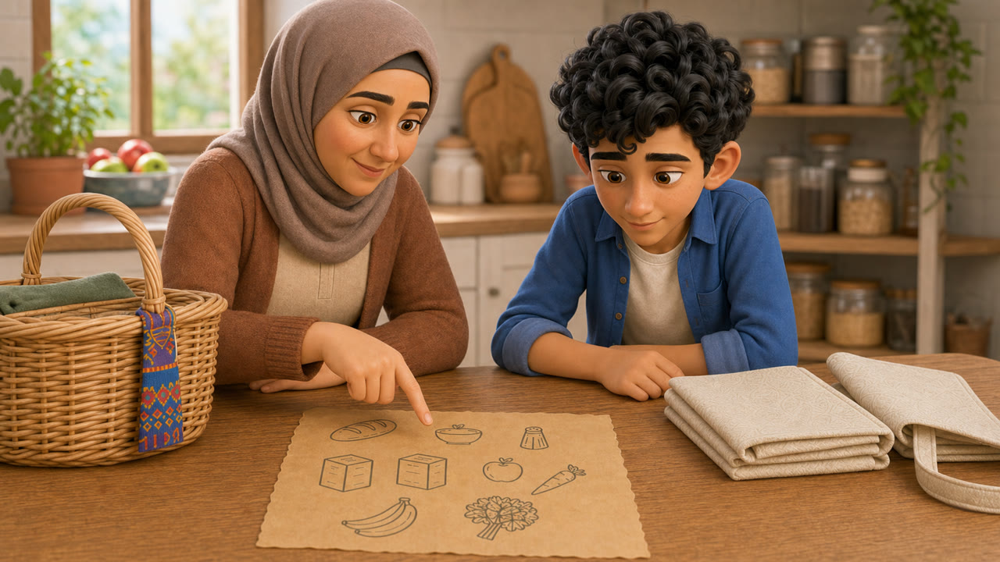

Ünite II · وَقْتُ التَّسَوُّق
Sepette Ne Eksik?
ماذا يَنْقُصُ في السَّلَّة؟
Şenliğin alışverişi tamamlanmalı. Fatih, Meryem, Anne ve Manav’ın seslerini dikkatle dinle; listeyi kur, pazarı dolaş ve eksik ürünü bul.
- 27gerçek ses
- 5etkileşimli sahne
- 10–12dakika

Görev 1 / 5
Evde Liste
Annenin istediği ürünleri dikkatle dinle.
Önce dinle
Sesli sahne
Sonra yap
Görev
Pazar mührü kazanıldı
Sepeti tamamladın!
أَحْسَنْتَ! أَكْمَلْتَ المُهِمَّةَ.
100
/ 100
Dinlenen ses27 / 27
Tamamlanan görev5 / 5
DurumBaşarılı
Final kanıtı
028: İki kutu çay istendi.
052: Ekmek, şeker ve tuz var; çay söylenmedi.
النّاقِصُ: عُلْبَتانِ مِن الشّاي
Yeni puanlı denemeyi EBA ders ekranından yeniden başlat. “Sahneleri gözden geçir” inceleme içindir ve mevcut puanı değiştirmez.